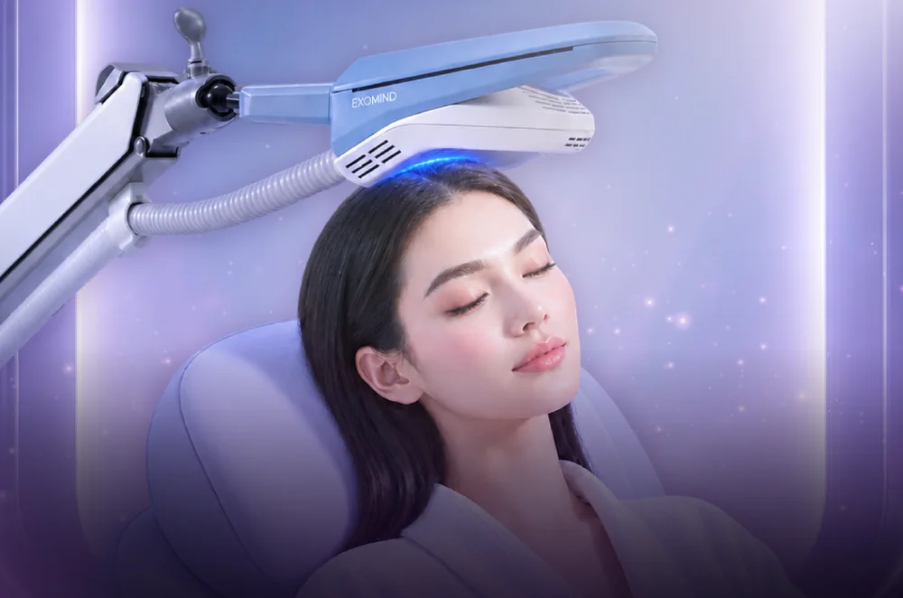

How it works
The coil sits on your head and makes a magnetic field that switches on and off very fast. The field passes through the skull without heating it and makes small electric currents in the brain cells under the coil. Repeated pulses make that area more active and help it link up better with the rest of the brain.
Exomind aims at the dorsolateral prefrontal cortex. This area helps you control urges, stick to plans and handle stress, and it tends to be less active in people with depression and in people who overeat. BTL calls its version ExoTMS and says it needs fewer sessions than older TMS machines, which often take 20 to 36 visits.
What it's approved for
The US FDA cleared Exomind to treat depression. In Europe and Canada it is also approved for anxiety, obsessive compulsive disorder and binge eating. Using it for food cravings, stress and sleep, as we do at Apex Slim, goes beyond those approvals and rests on the studies below.
Results from studies
All of these studies were small, run with BTL and short. Only two had a group that got a fake treatment to compare with.
- Food cravings. 23 adults had 4 to 6 sessions. One month later their food craving score was 36 percent lower, and they had lost 2.3 kg on average.
- Self-control. 51 adults had 6 sessions, and 12 of them got a fake treatment. One month later 76 percent of the treated group said their self-control had improved, and their self-control score went up 3 times more than in the fake group.
- Binge eating. 38 adults had 6 sessions. One month later 28 of them, or 74 percent, no longer scored as binge eaters.
- Sleep and stress. 43 adults with poor sleep had 6 sessions 3 to 7 days apart, and 12 of them got a fake treatment. In the treated group the sleep quality score fell from 9.5 to 5.8, where a lower score means better sleep.
We don't yet know how long these changes last past 1 to 3 months, or how Exomind compares with diet support, counselling or medicine.
Your sessions
- You take off metal jewellery, glasses and hair clips, then sit back in a chair and stay awake. Nothing goes through the skin and you don't need an anaesthetic.
- The coil is placed on your head over the treatment area. You hear clicking and feel tapping on your scalp, and the muscles of your face or jaw may twitch with the pulses.
- Each session takes 25 to 30 minutes. You can drive and go back to work after.
The studies used 4 to 6 sessions spaced 3 to 7 days apart. The doctor plans yours at the consult.
Side effects
- a headache or a sore scalp on the day, which usually passes within hours
- twitching of the face or jaw during the pulses
- a seizure, which is rare with TMS
Most people in the studies found the sessions comfortable and none had a serious side effect.
Who can't have it
You can't have Exomind if you have metal in or near your head, like aneurysm clips, a cochlear implant or a brain stimulator. Tell the doctor if you have a pacemaker, if you have ever had a seizure or epilepsy, or if you're pregnant. If you have depression or another mental health condition, keep seeing your own doctor and don't stop any medicine since Exomind doesn't replace that treatment.
Questions
Does it hurt?
It feels like tapping on your scalp. Some people get a mild headache afterwards that passes within hours.
Will it change my personality?
No. It makes the area that controls urges and stress more active, and you stay fully awake and in control during the session.
How many sessions do I need?
The studies used 4 to 6 sessions, 3 to 7 days apart. The doctor plans yours at the consult.
Can I have it with 1 Week 1 Kilo?
Yes. Ask the doctor at your consult, since the food cravings study is the closest match for people trying to lose weight.
Sources
- Apex Hospital & Clinics. Exomind brochures and information sheet, 2026.
- Klírová M. Mind over cravings: ExoTMS as the novel rTMS technology for food cravings reduction. BTL clinical summary, 2025.
- Cady L, Nanda R, Eberwein R, Johnston H, Tvrdik N. Novel ExoTMS technology for the improvement of self-control and food cravings: 1-month preliminary results. BTL clinical summary, 2025.
- Nanos G, Silva M, Patel C. Novel ExoTMS technology for the improvement of sleep quality and reduction of stress: preliminary data. BTL clinical summary, 2025.
- Pánek D, Donchev TS. Novel ExoTMS technology for the reduction of binge eating symptoms. PCN Reports. 2025. doi:10.1002/pcn5.70200
- Dees M, Halaas Y, McCoy JD. ExoTMS technology: a breakthrough in transcranial stimulation for enhancing mental well-being. J Psychiatry Psychiatr Disord. 2025. doi:10.26502/jppd.2572-519X0255
- BTL. Exomind. bodybybtl.com
Results vary from person to person. The doctor checks whether a treatment suits you at your consult.